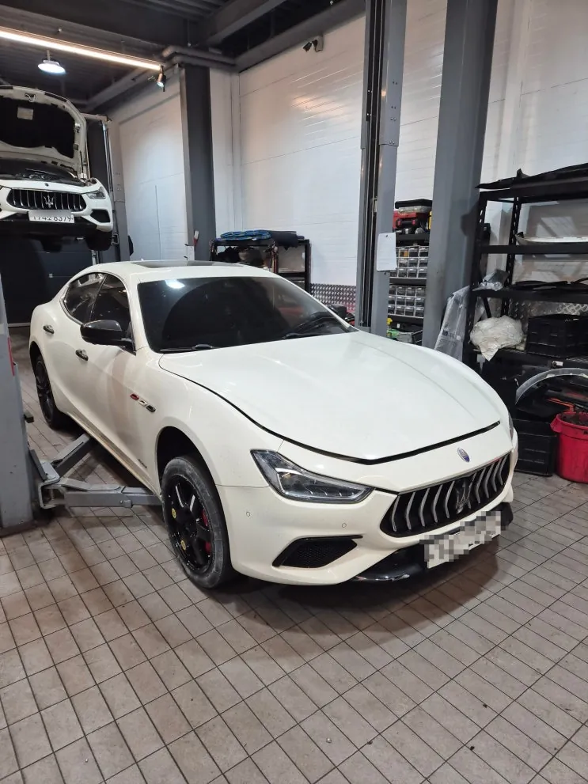
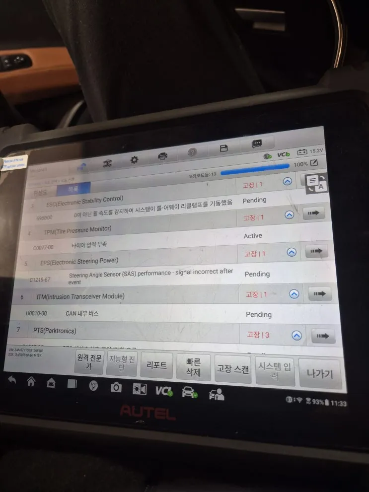
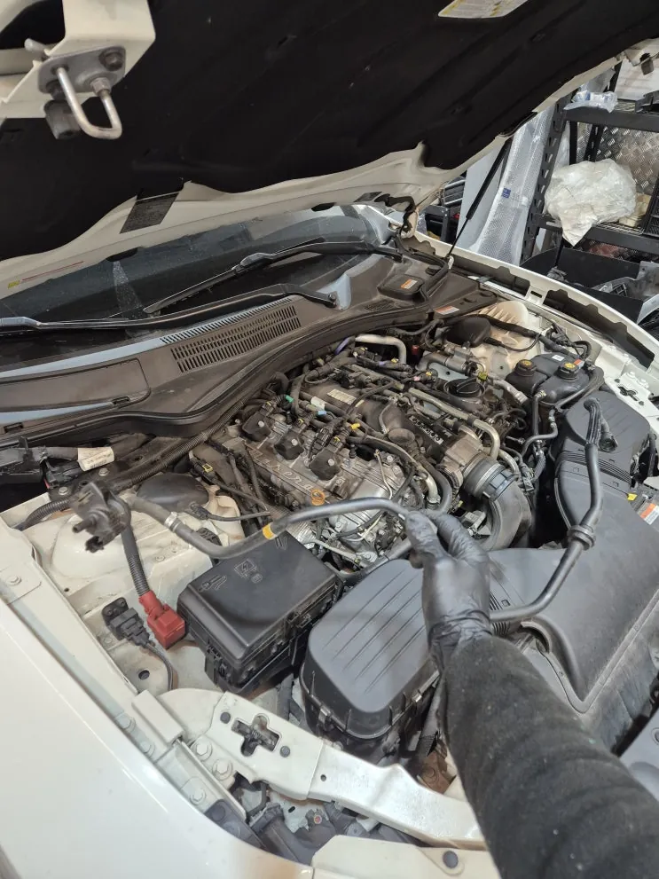
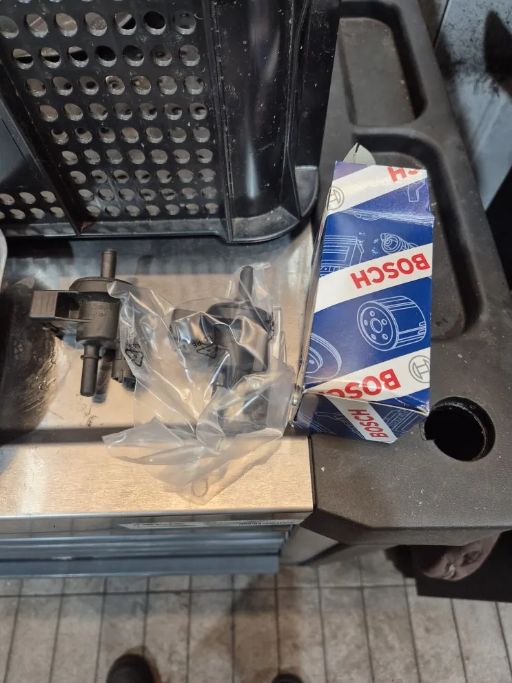
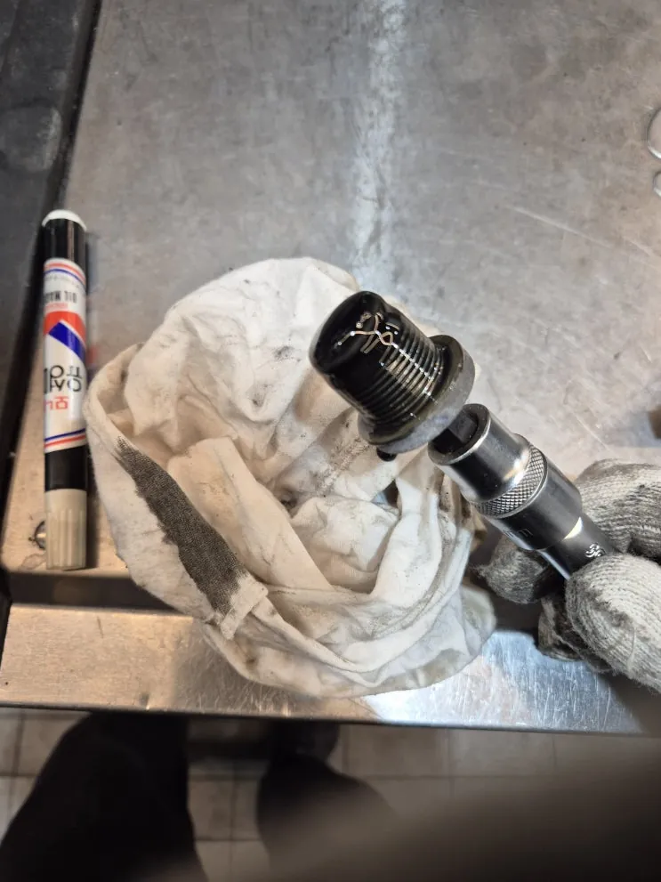
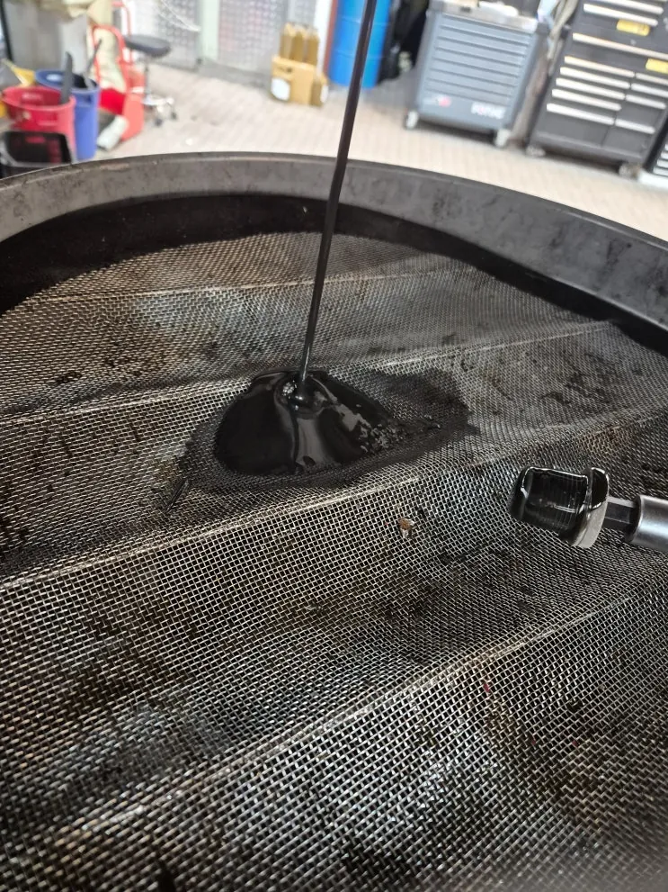
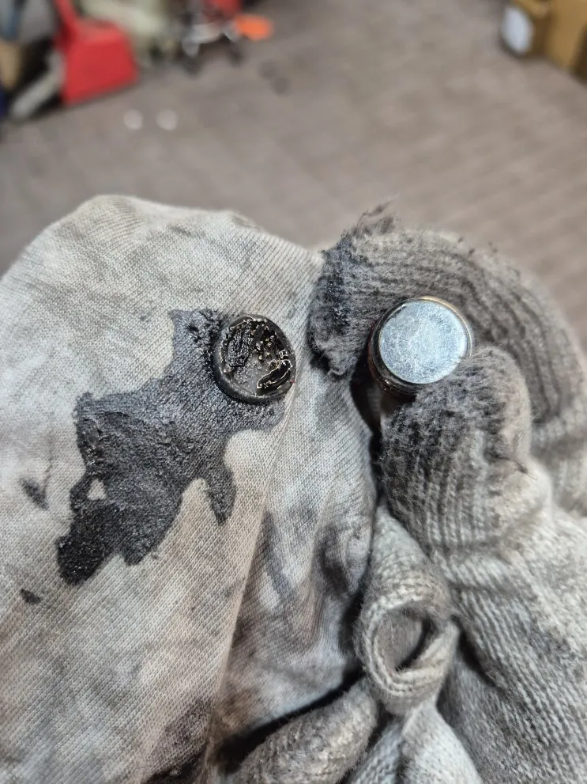
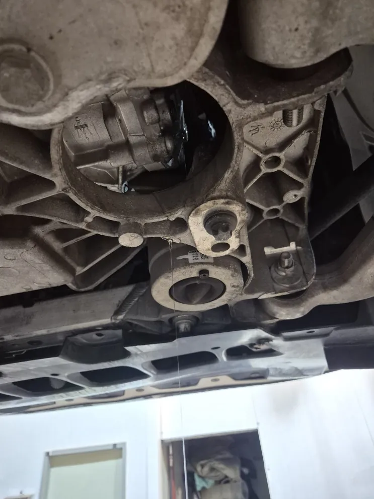

기블리 엔진경고등 — 증발가스 계통 누출 코드, PCV 밸브·캐니스터 교체
At a glance한눈에 보기
- 차량
- 마세라티 기블리
- 증상
- 엔진경고등 점등, 증발가스 계통 누출 고장 코드, 오일류 교환 시기
- 진단
- 기블리의 엔진경고등은 진단기에서 증발가스(EVAP) 계통 다량 누출 코드로 확인돼 PCV 밸브와 캐니스터 어셈블리를 교체했습니다. 같은 입고에서 교환 시기가 된 앞·뒤 디퍼렌셜 오일과 ZF 8단 미션오일·오일팬도 교환했습니다.
- 작업
- 진단기 고장 코드 확인
- PCV 밸브 교체
- 캐니스터 어셈블리 교체
- 앞·뒤 디퍼렌셜 오일 교환
- ZF 8단 미션오일·오일팬 교환

입고 증상
엔진경고등이 켜지고 주행거리상 오일류 교환 시기도 돼 기블리가 입고됐습니다. 마세라티 엔진경고등은 모양은 하나여도 원인은 매우 다양합니다. 기블리에서는 증발가스 관련 고장 코드가 자주 나옵니다.


진단 — 증발가스 계통 누출
진단기로 고장 코드를 읽어 보니 엔진경고등과 관련해 증발가스 계통 다량 누출이 확인됐습니다. 연료에서 생긴 증발가스가 지나가는 경로에서 새는 곳이 있다는 뜻입니다.


작업 — PCV 밸브·캐니스터 교체
관련 부품인 PCV 밸브를 떼어 내 교체하고, 캐니스터도 어셈블리째 신품으로 교체했습니다. 캐니스터는 연료 증발가스를 모아 두었다가 엔진으로 보내 태우게 하는 부품입니다.


디퍼렌셜·미션오일 교환
오일류 교환 주기를 확인한 결과 디퍼렌셜 오일도 교환 시기가 돼 함께 교환했습니다. 빼낸 오일은 아주 검은 상태였고, 드레인 마개(코크)에는 쇳가루가 많이 붙어 있어 깨끗이 세척한 뒤 닫았습니다.
후륜 차량은 디퍼렌셜이 뒤쪽에 하나지만, 사륜(Q4) 차량은 앞뒤에 각각 있어 함께 교환하는 것이 좋습니다. 이번 차량도 앞쪽 디퍼렌셜까지 교환했습니다.
미션오일도 디퍼렌셜 오일과 교환 주기가 같아 ZF 8단 미션오일을 교환했습니다. 내부를 세척하고 오일팬을 교환한 뒤 새 오일을 넣어 마무리했습니다.
엔진경고등은 경고등만 보고 원인을 알 수 없으니 진단기로 고장 코드부터 확인하는 것이 먼저입니다. 계기판 사진을 카톡으로 먼저 보내 주세요.

자주 묻는 질문
기블리 엔진경고등이 켜지면 원인이 무엇인가요?
엔진경고등은 모양은 하나여도 원인은 여러 가지라 진단기로 고장 코드를 읽어야 알 수 있습니다. 기블리에서는 증발가스 계통 관련 코드가 자주 나옵니다.
사륜 기블리는 디퍼렌셜 오일을 앞뒤 모두 갈아야 하나요?
사륜(Q4) 차량은 디퍼렌셜이 앞뒤에 각각 있어 교환할 때 함께 바꾸는 것이 좋습니다.
이 작업의 원문 기록: 네이버 블로그에서 보기
Consultation
마세라티 기블리, 비슷한 증상이 있나요?
증상 사진이나 경고등 화면을 카톡으로 먼저 보내 주시면 확인 후 안내해 드립니다. 전국 탁송 상담 가능.